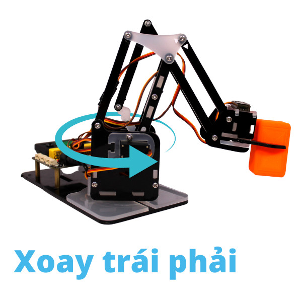

5. Lập trình di chuyển các bộ phận
Xin chào các bạn! Đã đến lúc bắt đầu hành trình khám phá những điều mới rồi! Hãy bắt đầu cùng Robot Arm nào.
Mục tiêu
Giới thiệu các khối lệnh sử dụng với ArmBot.
Hiểu được cách điều khiển các khớp để di chuyển cơ bản.
Hướng dẫn sử dụng các câu lệnh để điều khiển riêng từng servo.
Giới thiệu khối lệnh di chuyển cơ bản
Khối lệnh khởi tạo các chân servo:
Khối lệnh này được gọi ở đầu chương trình để khởi tạo lại các chân tín hiệu servo mà bạn đã kết nối với mạch mở rộng. Mặc định, các chân tín hiệu này được khai báo như sau:
P8 - Servo khớp giữa
P9 - Servo khớp phải
P10 - Servo khớp trái
P11 - Servo đầu gắp
Bạn có thể thay đổi các chân tín hiệu này nếu các chân tín hiệu mặc định bạn muốn dùng cho mục đích khác.
Khối lệnh về tọa độ gốc
{kind=link}
{kind=link}
Servo khớp giữa: có tác dụng xoay toàn bộ phần cánh tay quay phải sang trái tương ứng góc 0-180 độ
{kind=link}
Khối lệnh điều khiển servo khớp giữa tới một góc nào đó tức thời.
Trong đó:
degree là tham số góc quay của servo có giá trị 0 đến 180 độ.
speed là tốc độ của động cơ trong khoảng 0~100.
Ví dụ:
Khối lệnh điều khiển servo khớp giữa tới một góc tới hạn degree với thời gian nghỉ sleep sau mỗi bước di chuyển change.
Trong đó:
change là tham số 1 bước di chuyển tới góc mới của servo. Là giá trị số có giá trị từ 0 đến (degree/change). change có giá trị càng nhỏ thì servo chuyển bước càng mượt.
sleep là thời gian nghỉ giữa mỗi bước change có đơn vị là mili giây.
degree là tham số góc quay tới hạn của servo có giá trị 0 ~ 180 độ.
speed là tốc độ của động cơ trong khoảng 0~100.
Ví dụ:
{kind=link}
{kind=link}
{kind=link}
{kind=link}
Servo khớp phải: có tác dụng xoay phần vai của robot với góc xoay trong giới hạn 50-180 độ, giúp đầu gắp robot di chuyển tới/lui một cách tương đối.
{kind=link}
Khối lệnh điều khiển servo khớp phải tới một góc nào đó tức thời.
Trong đó:
degree là tham số góc quay của servo có giá trị 50 đến 180 độ.
speed là tốc độ của động cơ trong khoảng 0~100.
Ví dụ:
Khối lệnh điều khiển servo khớp phải tới một góc tới hạn degree với thời gian nghỉ sleep sau mỗi bước di chuyển change.
Trong đó:
change là tham số 1 bước di chuyển tới góc mới của servo. Là giá trị số có giá trị từ 0 đến (degree/change). change có giá trị càng nhỏ thì servo chuyển bước càng mượt.
sleep là thời gian nghỉ giữa mỗi bước change có đơn vị là mili giây.
degree là tham số góc quay tới hạn của servo có giá trị 50 ~ 180 độ.
speed là tốc độ của động cơ trong khoảng 0~100.
Ví dụ:
{kind=link}
{kind=link}
{kind=link}
{kind=link}
Servo khớp trái: có tác dụng xoay phần khuỷu tay của robot với góc xoay trong giới hạn 0-140 độ, giúp đầu gắp robot di chuyển lên/xuống một cách tương đối.
{kind=link}
Khối lệnh điều khiển servo khớp trái tới một góc nào đó tức thời.
Trong đó:
degree là tham số góc quay của servo có giá trị 0 đến 140 độ.
speed là tốc độ của động cơ trong khoảng 0~100.
Ví dụ:
Khối lệnh điều khiển servo khớp trái tới một góc tới hạn degree với thời gian nghỉ sleep sau mỗi bước di chuyển change.
Trong đó:
change là tham số 1 bước di chuyển tới góc mới của servo. Là giá trị số có giá trị từ 0 đến (degree/change). change có giá trị càng nhỏ thì servo chuyển bước càng mượt.
sleep là thời gian nghỉ giữa mỗi bước change có đơn vị là mili giây.
degree là tham số góc quay tới hạn của servo có giá trị 0 ~ 140 độ.
speed là tốc độ của động cơ trong khoảng 0~100.
Ví dụ:
{kind=link}
{kind=link}
{kind=link}
{kind=link}
Servo đầu gắp:
Khối lệnh điều khiển servo đầu gắp đóng/mở.
{kind=link}
{kind=link}
{kind=link}
Viết chương trình

Chương trình: Đây là chương trình điều khiển ArmBot gắp vật từ vị trí A sang vị trí B

Khai báo ban đầu. Thực hiện kéo các khối lệnh theo trình tự sau:
Đầu tiên ta sẽ khai báo các chân servo đã được sử dụng trên ArmBot.
Tạo biến tốc độ để lưu giá trị tốc độ hoạt động của robot. Bạn có thể thay đổi giá trị này từ 0-100 tùy vào sở thích và yêu cầu của bạn.
Đặt góc cố định cho khuỷu tay (servo khớp trái) là 40. Giá trị này bạn có thể thay đổi để tăng hoặc giảm chiều cao của đầu gắp để phù hợp với chiều cao của vật cần gắp.
Di chuyển đầu gắp đến vị trí lấy vật. Thực hiện kéo các khối lệnh theo trình tự sau:
Mở đầu gắp để sẵn sàng gắp vật.
Xoay khớp giữa - đồng nghĩa với việc xoay toàn bộ thân cánh tay về phía vật cần gắp. Với góc quay từ 0-180 độ. Bạn có thể tự điều chỉnh thông số này tùy vào vị mà vật đang ở đâu. Như trong hình và video trên. Vị trí vật cần gắp là màu đỏ - tương ứng với góc cần xoay là 45 độ.
Xoay khớp bên phải từ từ tới góc 150 độ giúp đầu gắp hạ xuống gần mặt đất. Lúc này đầu gắp sẽ nằm tại vị trí sẵn sàng để gắp vật (trong video thì vị trí gắp là ngay phần đế của vật cần gắp).
Đóng đầu gắp để gắp vật.
Xoay khớp bên phải từ từ tới góc 90 độ để gắp vật cao lên giúp để dễ dàng di chuyển. Sau khối lệnh này ta dùng khối lệnh tạm dừng 1000ms để tránh tình trạng do chuyển quá nhanh các hoạt động gây ra gia tốc cao làm robot bị rung mạnh.
Di chuyển đầu gắp đến vị trí đặt vật. Thực hiện kéo các khối lệnh theo trình tự sau:
Xoay khớp giữa - đồng nghĩa với việc xoay toàn bộ thân cánh tay về phía nơi cần đặt vật. Như trong video và vị trí màu xanh - tương ứng với góc cần xoay là 135 độ.
Xoay khớp bên phải từ từ tới góc 150 độ giúp đầu gắp hạ xuống gần mặt đất. Lúc này đầu gắp sẽ nằm tại vị trí sẵn sàng để gắp vật (trong video thì vị trí gắp là ngay phần đế của vật cần gắp).
Mở đầu gắp để thả vật.
Xoay khớp bên phải từ từ tới góc 90 độ để đầu gắp về vị trí an toàn và kết thúc 1 chu trình gắp - thả vật.
{kind=link}
Chương trình mẫu
Nhấp vào chữ tại đây để xem chương trình mẫu, hoặc quét mã QR bên dưới để xem chương trình.
Robot di chuyển tới lui: Tại đây